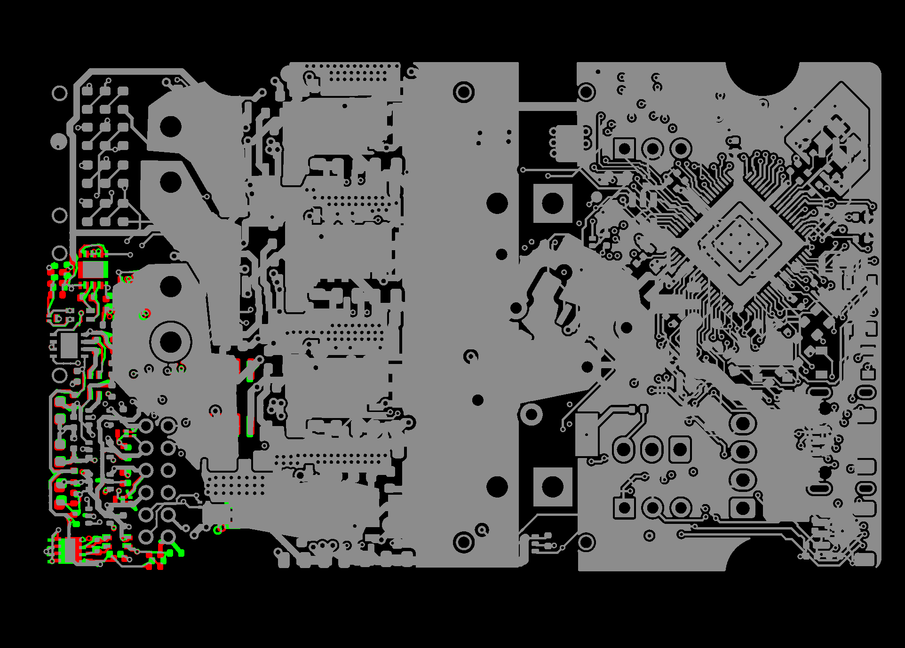
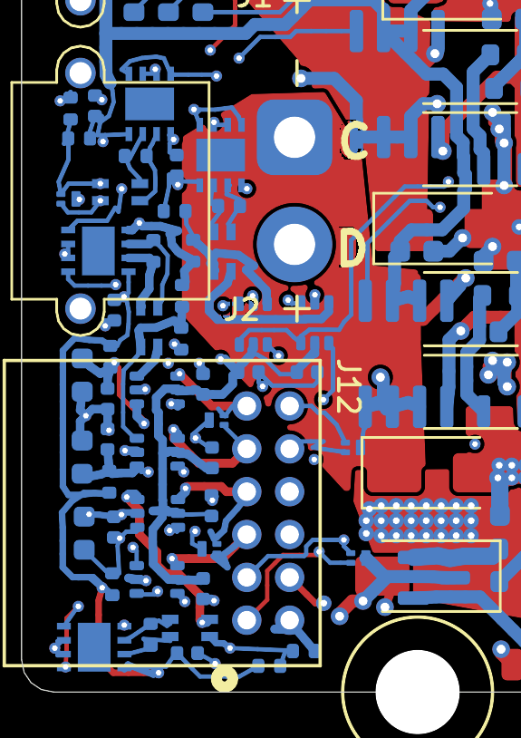

Creep: the morph, visually
Shipped board → rev-B placement in DRC-clean checkpoints ·
rev-b-fixes commits 1dd84be → 769af1c · 2026-08-09 ·
hardware/tools/jiggle2/
1 · Scrub the morph
Six checkpoints, every one gate-clean. Changes mode diffs each checkpoint against the shipped board: gray copper is unchanged, red is where copper was, green is where it is now — motion reads red → green. Render mode shows the board itself (F.Cu red / B.Cu blue / silk yellow).

All motion concentrates in the encoder/termination corner (left edge) — the rest of the board is untouched gray, which is itself the point: creep moves nothing it doesn't have to.
2 · Where copper moved, per layer (s=0 → 0.404)


3 · The encoder corner, up close
The moved cluster (R86–R93, U16–U20, C63, D24…) at 600 dpi. Red trailing edges / green leading edges show each part's actual travel; note the feed stubs that stretch rather than detach — that's the attachment constraint towing copper so no checkpoint ever goes unconnected.



4 · How it moves (one paragraph, no code)
Each unit — footprint assembly, trace node, via; copper is a first-class mover, in alternating
passes with the parts — proposes a step toward its rev-B target, and a line search keeps the largest
fraction that holds every DRC margin above its floor: rule + 15µm for new pairs, the shipped margin
(held per polygon edge) for pairs the shipped board already packed tighter. α = 0 is a
legal answer: no room, no move. Blocked movers deposit pressure on the copper that clamped them, so
packed corridors creep like a traffic jam instead of shearing; same-net contacts are constraints too,
so parts tow their feed stubs instead of sliding off them. Details live in
creep.py/padgeom.py/courtyards.py (commit
769af1c).
| solve.py projection (c1–c3) | creep.py feasibility | |
|---|---|---|
| Clean checkpoints | 1 / 13 (s=0 only) | 6 / 6 (all emitted) |
| First failure | s=0.02 (3 violations) | none emitted |
| Violations at last state | 251 (+1 airwire) | 0, 0 airwires |
| Depth reached | s=1.0 (dirty throughout) | s=0.404 (clean throughout, honest stall) |
| What failure means | trajectory unusable | stall table = mid-flight reroute worklist |
5 · Gate evidence
| checkpoint | s | airwires | new violations | verdict |
|---|---|---|---|---|
| 0 | 0.000 | 0 | 0 | OK |
| 1 | 0.106 | 0 | 0 | OK |
| 2 | 0.169 | 0 | 0 | OK |
| 3 | 0.260 | 0 | 0 | OK |
| 4 | 0.339 | 0 | 0 | OK |
| 5 | 0.404 | 0 | 0 | OK |
kicad-cli 9.0.8, severity-error, vs shipped baseline 0. For contrast, the c1 projection run read 3 → 17 → 34 → 82 → … → 251 new violations across its 13 checkpoints. Runtime: 163 cycles ≈ 2min solve + 1min gate.
6 · What's honestly stuck: the reroute worklist
The stall is the deliverable, not the failure. 43 parts stopped short with, per part, the exact
pair, margin, and blocker that clamped them (data_morph/creep_report.json). 125 of 271
blocking margins sit on encoder/termination copper — the same attribution the three-cycle experiment
made statistically, now computed per item:
| blocker | margins clamped | reading |
|---|---|---|
Vdrive dragged segs | 40 | power corridor must be rerouted mid-flight, not dragged |
/EXT_ANALOG_SW segs | 32 | same — U24/U25 lane |
| J2 NPTH pads | 24 | hard wall: R91/C63/R90 paths cross the mounting keepout |
GND segs/vias | 27 | stubs to tow or re-drop onto the pour |
/ENC_* + *_SW nets | ~60 | the termination corridor rev-B's routing replaces anyway |
Deepest stalls: R91 (1.36mm short), C63 (1.23), R88 (1.20), U18 (1.14). Next phase: feed these
blockers to the reroute.py machinery as mid-flight atomic reroutes — rip and re-add a
blocking chain in one checkpoint, both sides clean — then resume creeping.